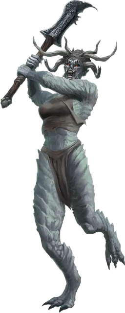

Охотник Бафомета
Stalker of Baphomet
Огромное Исчадие (Демон), обычно хаотично-злое

Класс Доспеха 17 (природный доспех)
Хиты 200 (16к12 + 96)
Скорость 40 футов
| мод | спас | ||
|---|---|---|---|
| СИЛ | 25 | +7 | +7 |
| ЛОВ | 17 | +3 | +7 |
| ТЕЛ | 22 | +6 | +6 |
| мод | спас | ||
|---|---|---|---|
| ИНТ | 13 | +1 | +1 |
| МДР | 16 | +3 | +7 |
| ХАР | 12 | +1 | +1 |
Навыки Атлетика +15, Восприятие +7, Скрытность +11
Иммунитет к состояниям испуг, очарование
Чувства тёмное зрение 120 футов, пассивное Восприятие 17
Языки Бездны, Великаний
Опасность 12 (8400 опыта)
Бонус мастерства +4
Особенности
Зов лабиринта. Охотник может с лёгкостью вспомнить любой пройдённый путь.
Сопротивление магии. Охотник совершает с преимуществом спасброски от заклинаний и прочих магических эффектов.
Действия
Мультиатака. Охотник совершает две атаки Глефой или две атаки Камнем.
Глефа. . Рукопашная атака оружием: +11 к попаданию, досягаемость 15 футов, одна цель. Попадание: 18 (2к10 + 7) рубящего урона плюс 9 (2к8) урона силовым полем.
Камень. . Дальнобойная атака оружием: +11 к попаданию, дистанция 60/240 футов, одна цель. Попадание: 23 (3к10 + 7) дробящего урона. Если цель - существо Большого размера или меньше, оно должно преуспеть в спасброске Силы Сл 19, иначе будет сбито с ног. После того, как охотник бросит камень, совершите бросок к6; при результате "3" или ниже у охотника больше не остаётся камней для броска.
Извержение рогов (перезарядка 5-6). Охотник заставляет землю вспучиваться в точке, которую он может видеть в пределах 60 футов. Шесть камней в форме рогов извергаются в виде цилиндра радиусом 30 футов и высотой 30 футов с центром в этой точке, а затем рассыпаются в пыль. Каждое существо в этой области должно совершить спасбросок Ловкости Сл 15. В случае провала существо получает 33 (6к10) колющего урона и подбрасывается на 30 футов вверх, после чего падает. В случае успеха существо получает половину этого урона.
Использование заклинаний. Охотник накладывает одно из следующих заклинаний, используя Мудрость в качестве базовой характеристики и без использования материальных компонентов (Сл спасброска от заклинаний 15):
• 1/день каждое: слияние с камнем [meld into stone], изменение формы камня [stone shape], каменная стена [wall of stone].
Описание
Поклонение демонам редко встречается среди каменных великанов; разрушительная склонность демонов - полная противоположность мастерству, которое руководит действиями каменного великана. Рогатый царь Бафомет - исключение. Несмотря на то, что он безжалостный охотник, Принц Зверей также использует сложные лабиринты в качестве своих охотничьих угодий. Каменные великаны могут быть загипнотизированы лабиринтами повелителя демонов и поступить к нему на службу. Эти великаны могут продолжать заниматься искусством, создавая лабиринты, и одновременно утолять свою жажду крови, охотясь в них.
Бафомет награждает своих самых верных последователей культа превращением в демонических охотников. У такого великана вырастает замысловатая корона из шести рогов, и Бафомет дарует ему волшебную глефу, а так же возможность вызывать каменные рога из земли.